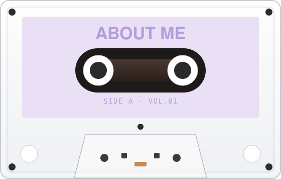

hi! I’m Dani Yeyang (yeah-young) Tian, a product designer who transforms complex, real-world systems into clear and intuitive experiences. currently @ UMich MSI.
- Verdure Client project · UX/UI · Complex system Track 01
- Clicket Physical product · App · Service Track 02
- Coming up Microsoft Fabric Client project · AI · UX research Track 03

come see my previous work